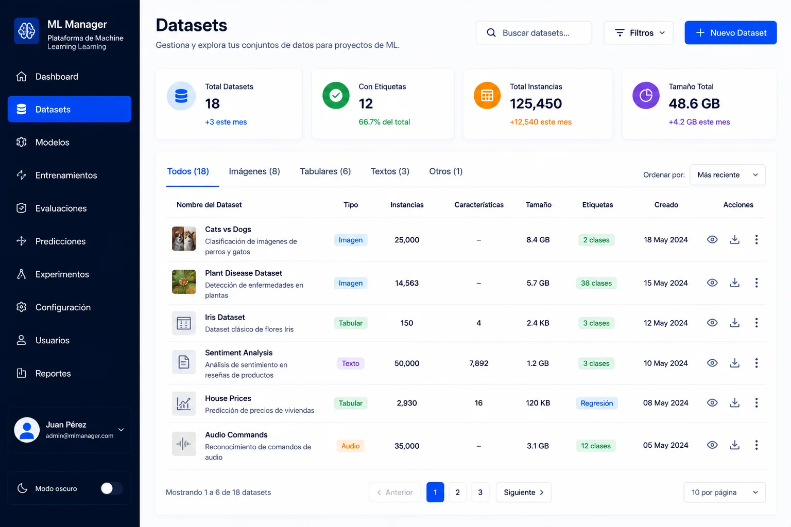

Machine Learning2025
Análisis y modelado de datos
Flujo práctico con Python para explorar datasets, visualizar información y presentar resultados de modelos de clasificación y predicción.
Abrir casoDesarrollo de software · Web · Datos · IA
Construyo aplicaciones web, sistemas de software y proyectos de datos con Java, Python, PHP y SQL. Mi foco está en resolver bien el problema antes de decorar la solución.
01 / Proyectos seleccionados
Tres casos con suficiente contexto para entender el problema, la implementación y el resultado visual. El resto queda como archivo secundario.

Flujo práctico con Python para explorar datasets, visualizar información y presentar resultados de modelos de clasificación y predicción.
Abrir caso
Tienda virtual con catálogo, navegación de producto e inicio de sesión. El proyecto combina interfaz, flujo de compra y desarrollo web.
Abrir caso
Aplicación de escritorio para registrar, buscar, modificar y eliminar información de libros mediante una interfaz Java conectada a MySQL.
Abrir caso02 / Experiencia
Desarrollo de un sistema web de inventario y gestión interna en PHP, con autenticación, módulos por rol, recuperación de cuenta y exportación de datos.
Formación en programación, bases de datos, desarrollo web, metodologías de software, inteligencia artificial y machine learning mediante proyectos académicos y prácticos.
03 / Perfil
Prefiero que el stack aparezca como contexto de trabajo y no como una colección de logotipos. Estas son las áreas que hoy forman mi base técnica.
Me interesa construir productos digitales claros, mantenibles y conectados con problemas reales.
Trabajo entre desarrollo web, software de escritorio, bases de datos y experimentos de inteligencia artificial. Mi objetivo es seguir profundizando en ingeniería de software mientras convierto proyectos académicos y profesionales en evidencia concreta de cómo resuelvo problemas.
04 / Archivo
Trabajo adicional que amplía el rango técnico del portafolio.
Exploración de detección con Python, OpenCV y YOLO.
2025Dashboard y flujo de gestión de tareas.
2025Flujo de elección y visualización de resultados.
2025Simulador de operaciones básicas y validaciones.
202405 / Contacto